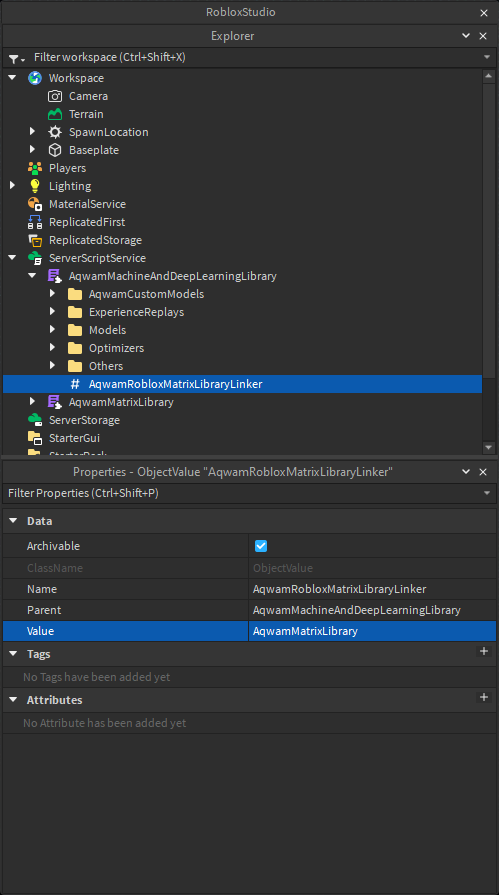

To install, we must first download and link our machine and deep learning library with our matrix library. However, you must use "Aqwam's Matrix Library" as every calculations made by our models are based on that matrix library.
| Version | Machine And Deep Learning Library | Matrix Library |
|---|---|---|
| Release (ModuleScript) | DataPredict (Release Version 1.5) | |
| Auto Update (Package) | DataPredict | MatrixL |
| Beta/Unstable (ModuleScript) | Aqwam's Machine And Deep Learning Library | Aqwam's Matrix Library |
Once you put those two libraries into your game make sure you link the Machine Learning Library with the Matrix Library. This can be done via setting the “AqwamRobloxMatrixLibraryLinker” value (under the Machine Learning library) to the Matrix Library.
Next, we will use require() function to our machine/deep learning library.
local DataPredict = require(AqwamMachineAndDeepLearningLibrary)